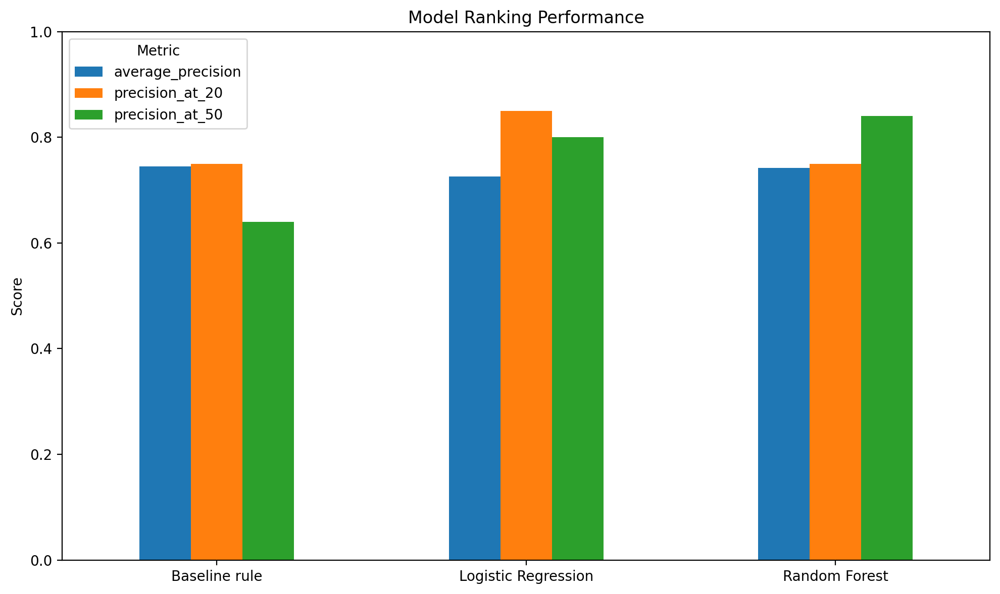

1. Title + Abstract
Research Question
Can March 2026 content-performance signals identify content items that experience a substantial decline in clicks in April 2026, using a client-held-out validation design?
Abstract
This study investigates whether March 2026 content-performance signals can identify content items associated with a substantial decline in clicks during April 2026. The analysis uses aggregated FlyRank ML Internship dataset signals and defines decline as April clicks being at or below 80% of March clicks. A simple baseline rule is compared with Logistic Regression and Random Forest using a client-held-out validation design. Logistic Regression reached Precision@20 of 0.85, while Random Forest reached Precision@50 of 0.84, showing different ranking behavior across the evaluation measures. The resulting scores are framed as decision-support signals for prioritizing human review rather than as proof of causation or guaranteed future performance.
2. Introduction / Problem Statement
Content performance can change over time, creating a practical review problem when a large number of content items need to be monitored. A reviewer may have limited time and therefore needs a way to prioritize which items should be inspected first.
This project approaches that problem as a supervised machine learning and ranking task. Instead of attempting to automatically modify content, the analysis asks whether information available during March can provide a useful signal for identifying items associated with a substantial reduction in clicks during April.
The intended output is therefore a prioritization signal. A high score indicates that an item may deserve earlier human review; it does not establish why the item changed or guarantee that an intervention will improve its future performance.
Decision Context
The practical use case is content maintenance. Reviewers can use the ranking and accompanying reason codes to decide which items to inspect first, while retaining human judgment over any content action.
3. Data
The analysis uses the FlyRank ML Internship dataset. March 2026 performance signals are used as model inputs, while April 2026 clicks provide the future outcome used to define the decline label.
Input Signals
clicks_marchimpressions_marchctr_marchposition_marchorganic_sessions_marchai_sessions_marchpaid_sessions_marchreferral_sessions_march
Outcome Definition
The analysis defines a declining item as:
clicks_april ≤ 0.80 × clicks_march
Items with zero March clicks were excluded because the outcome is defined relative to March clicks.
The analysis uses hashed client and content identifiers and does not expose client identities, private URLs, or private search queries.
4. Methodology
Validation Design
The evaluation uses a client-level holdout design. Approximately 80% of clients were used for training and approximately 20% were held out for testing. This reduces the risk of evaluating the model on content from the same clients used to train it.
The training set contains 60,541 observations from 34 clients, while the held-out test set contains 7,499 observations from 8 clients.
Models
- Baseline rule: a simple rule using March CTR and position thresholds.
- Logistic Regression: a linear classification model with standardized features and balanced class weights.
- Random Forest: an ensemble model using constrained tree depth and minimum leaf size.
Evaluation Metrics
The models were evaluated on the same held-out client test set using precision, recall, F1, ROC-AUC, Average Precision, Precision@20, and Precision@50.
Leakage Considerations
April clicks are used to construct the outcome label and are not included among the March input features. The analysis therefore treats the task as a March-to-April prediction and prioritization problem.
5. Results
The evaluation compares the simple baseline rule, Logistic Regression, and Random Forest on the same held-out client test set.
The baseline achieved a precision of 0.763 and an Average Precision of 0.745. Logistic Regression achieved an Average Precision of 0.726 and the highest Precision@20 at 0.85. Random Forest achieved an Average Precision of 0.742 and the highest Precision@50 at 0.84.
Because the project is intended to prioritize content for human review, Precision@20 and Precision@50 are useful ranking measures. The results show different ranking behavior rather than one model being strongest on every metric.
| Method | Precision | Recall | F1 | ROC-AUC | Average Precision | Precision@20 | Precision@50 |
|---|---|---|---|---|---|---|---|
| Baseline rule | 0.763 | 0.407 | 0.531 | 0.531 | 0.745 | 0.75 | 0.64 |
| Logistic Regression | 0.726 | 0.475 | 0.574 | 0.477 | 0.726 | 0.85 | 0.80 |
| Random Forest | 0.735 | 0.400 | 0.518 | 0.514 | 0.742 | 0.75 | 0.84 |
Model Comparison

6. Limitations & Honest Framing
This analysis has several important limitations.
- The study uses one March-to-April 2026 measurement window, so the findings should not be treated as evidence that the same relationships will hold across all future periods.
- The model identifies statistical patterns associated with observed decline. It does not establish causation.
- A high model score means higher review priority; it does not prove that an item will decline or that refreshing the item will improve its performance.
- The client-level holdout reduces the risk of evaluating the model on the same clients used for training, but it does not guarantee generalization to every possible client or content environment.
- The analysis uses aggregated performance signals and does not contain all possible reasons why content performance may change.
- Human review remains necessary before any content decision is made.
Therefore, the model is presented as a decision-support and prioritization tool rather than an automatic content-management system.
7. Ranked Recommendations
The model output can be converted into a human-review queue using observed performance signals and reason codes.
1. Review LOW_CTR Items
Check whether the title, search-intent alignment, and communication of the page's value are clear.
2. Review WEAK_POSITION Items
Inspect search intent, topical coverage, and on-page relevance.
3. Review LOW_ORGANIC Items
Check the item's organic search visibility and whether the observed traffic pattern requires further investigation.
4. Review LOW_AI Items
Review the structure, clarity, and usefulness of the content for answer-oriented discovery.
5. Review Items with Multiple Reason Codes
Multiple signals can indicate that a broader content review may be useful.
8. Reproducibility
The analysis was developed in the project repository and implemented through the capstone and supporting weekly notebooks.
Key Artifacts
- Capstone notebook
- Week-5 modeling notebook
- Week-6 validation audit
- Week-7 action playbook
- Model results CSV
- Capstone metrics JSON
- Model comparison figure

The analysis uses March 2026 content-performance signals to predict the defined April 2026 decline outcome using a client-held-out validation design.
Repository: github.com/umemon254/Fly-rank
9. Acknowledgments & Data Credit
This project was developed using the FlyRank ML Internship dataset.
Built on the FlyRank ML Internship dataset — FlyRank
The analysis uses hashed identifiers and public-safe aggregate performance signals. No client names, private URLs, or private search queries are included in this paper.
Final Takeaway
This project demonstrates a complete machine-learning workflow from a practical content-performance question through data preparation, model comparison, client-held-out validation, ranking evaluation, interpretation, and a human-review action playbook.
The central output is not an automatic content decision. It is a structured prioritization signal that can help a reviewer decide where to investigate first, while keeping the final decision with a human.